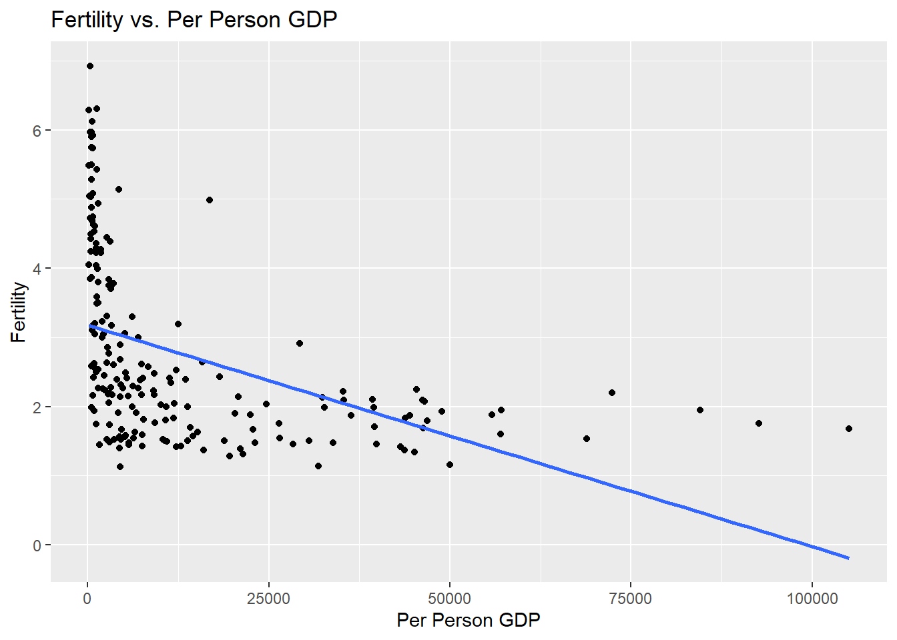
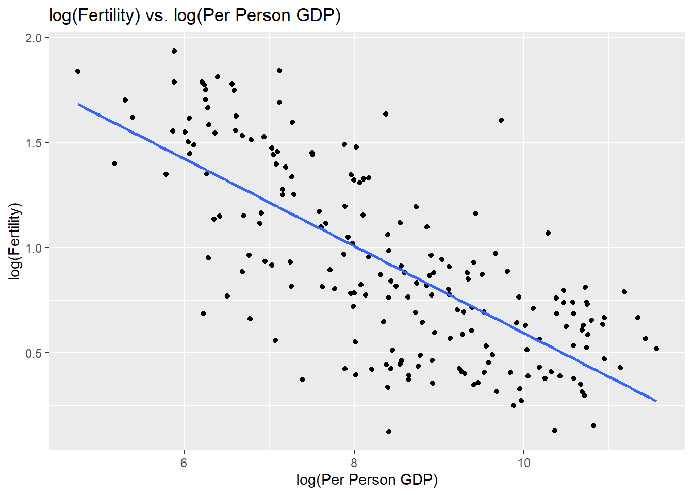
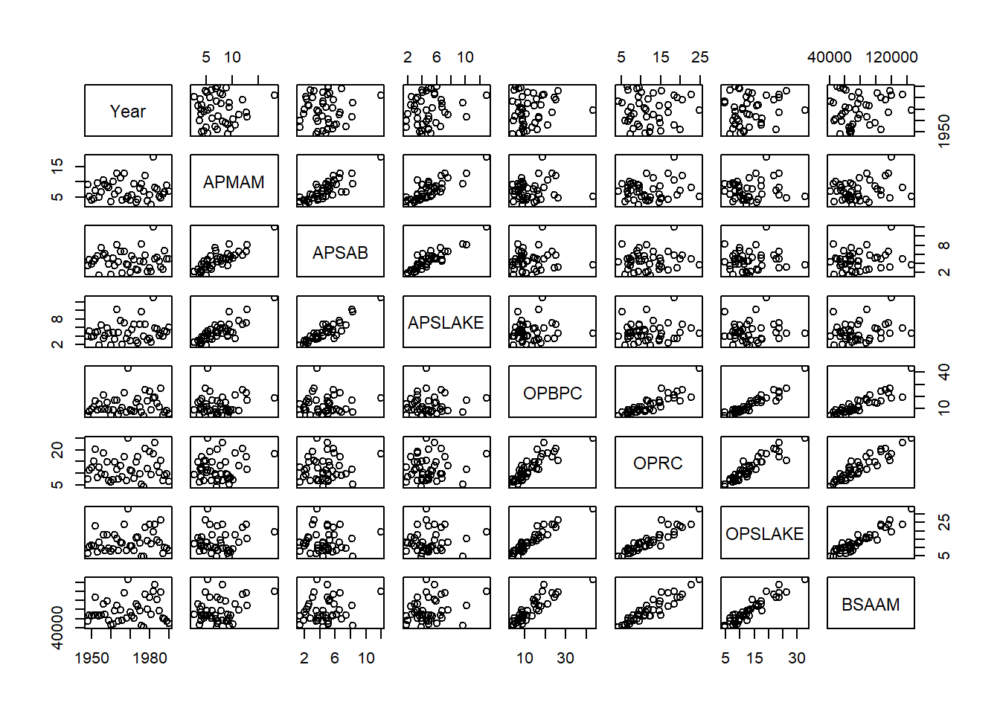
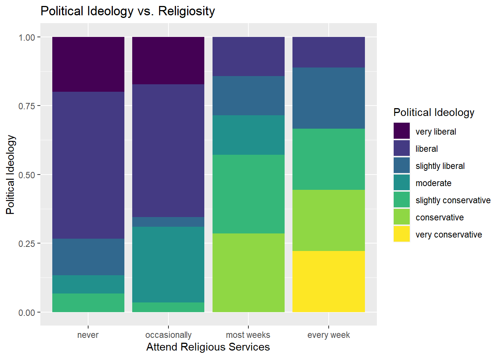
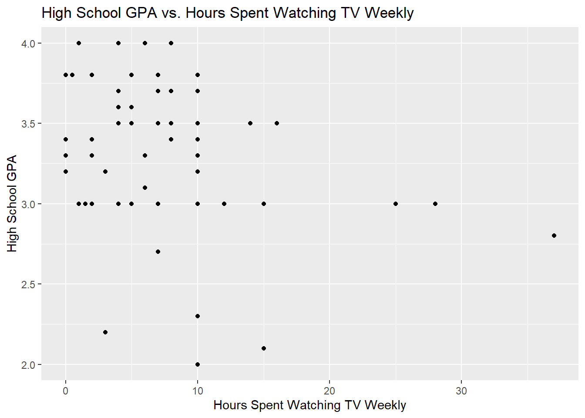

── Attaching core tidyverse packages ──────────────────────── tidyverse 2.0.0 ──
✔ dplyr 1.1.2 ✔ readr 2.1.4
✔ forcats 1.0.0 ✔ stringr 1.5.0
✔ ggplot2 3.4.2 ✔ tibble 3.2.1
✔ lubridate 1.9.2 ✔ tidyr 1.3.0
✔ purrr 1.0.1
── Conflicts ────────────────────────────────────────── tidyverse_conflicts() ──
✖ dplyr::filter() masks stats::filter()
✖ dplyr::lag() masks stats::lag()
ℹ Use the conflicted package (<http://conflicted.r-lib.org/>) to force all conflicts to become errors
Code
library(alr4)
Loading required package: car
Loading required package: carData
Attaching package: 'car'
The following object is masked from 'package:dplyr':
recode
The following object is masked from 'package:purrr':
some
Loading required package: effects
lattice theme set by effectsTheme()
See ?effectsTheme for details.
Code
library(smss)library(ggplot2)library(knitr)
Question 1
United Nations (Data file: UN11in alr4) The data in the file UN11 contains several variables, including ppgdp, the gross national product per person in U.S. dollars, and fertility, the birth rate per 1000 females, both from the year 2009. The data are for 199 localities, mostly UN member countries, but also other areas such as Hong Kong that are not independent countries.
The data were collected from the United Nations (2011). We will study the dependence of fertility on ppgdp.
A
Identify the predictor and the response.
Given that we are studying the dependence of fertility on ppgdp, the predictor would be ppgdp and the response would be fertility - that is, how are changes in ppgdp associated with changes in fertility.
B
Draw the scatterplot of fertility on the vertical axis versus ppgdp on the horizontal axis and summarize the information in this graph. Does a straight-line mean function seem to be plausible for a summary of this graph?
Code
# plot fertility on vertical and ppgdp on horizontal ggplot(data = UN11, aes(x = ppgdp, y = fertility)) +geom_point() +geom_smooth(method ='lm', se=F) +labs(title ="Fertility vs. Per Person GDP", x ="Per Person GDP",y ="Fertility")
`geom_smooth()` using formula = 'y ~ x'

summarize the information in this graph
There are far more data points for GDP near zero, and the fertility rate for these varies greatly (responses as high as 6, but also many as low as 1, with data points at every juncture along the way). The linear trend line does not do a good job with this data.
Does a straight-line mean function seem to be plausible for a summary of this graph?
A straight-line mean function does not seem to be plausible for a summary of this graph as the scatterplot shows that the relationship between the two variables is curvilinear, not linear.
C
Draw the scatterplot of log(fertility) versus log(ppgdp) using natural logarithms. Does the simple linear regression model seem plausible for a summary of this graph? If you use a different base of logarithms, the shape of the graph won’t change, but the values on the axes will change.
Code
# plot log(fertility) on vertical and log(ppgdp) on horizontal ggplot(data = UN11, aes(x =log(ppgdp), y =log(fertility))) +geom_point() +geom_smooth(method ='lm', se=F) +labs(title ="log(Fertility) vs. log(Per Person GDP)", x ="log(Per Person GDP)",y ="log(Fertility)")
`geom_smooth()` using formula = 'y ~ x'

Does the simple linear regression model seem plausible for a summary of this graph?
Yes, the simple linear regression model seems plausible for the summary of the natural logs of Fertility and Per Person GDP. First, the trend line shows a more clear relationship between the impact of log(Per Person GDP) on log(Fertility) - as log(Per Person GDP) decreases, so too does log(Fertility). Second, and unlike the original scatterplot of Per Person GDP and Fertility, the data is more evenly distributed both along the plot, and above and below the trendline.
Question 2
Annual income, in dollars, is an explanatory variable in a regression analysis. For a British version of the report on the analysis, all responses are converted to British pounds sterling (1 pound equals about 1.33 dollars, as of 2016).
A
How, if at all, does the slope of the prediction equation change?
Converting the response variable from USD to British pounds means that its value will decrease (we will divide by 1.33). The slope will see a similar impact, that is, it will also be divided by 1.33.
B
How, if at all, does the correlation change?
Correlation doesn’t change. We’ve only changed the unit of measurement; this does not impact correlation.
Question 3
Water runoff in the Sierras (Data file: water in alr4)
Can Southern California’s water supply in future years be predicted from past data? One factor affecting water availability is stream runoff. If runoff could be predicted, engineers, planners, and policy makers could do their jobs more efficiently. The data file contains 43 years’ worth of precipitation measurements taken at six sites in the Sierra Nevada mountains (labeled APMAM, APSAB, APSLAKE, OPBPC, OPRC, and OPSLAKE) and stream runoff volume at a site near Bishop, California, labeled BSAAM.
A
Draw the scatterplot matrix for these data
Code
# draw the scatterplot matrix using the pairs() functiondata(water)pairs(water)

B
summarize the information available from these plots.
From the question’s information:
If runoff could be predicted, engineers, planners, and policy makers could do their jobs more efficiently.
Given this, we are going to be most interested in any relationships between BSAAM (stream runoff volume at a site near Bishop, CA) and precipitation measurements at the six sites in the Sierra Nevada mountains (APMAM, APSAB, APSLAKE, OPBPC, OPRC, and OPSLAKE).
Breaking things down:
The variable Year does not appear to have a correlation with precipitation or run-off levels.
The A-lakes (APSLAKE, APSAB, and APMAM) seem to have a correlation with each other. This leads me to believe they are likely located near each other and share similar levels of precipitation (hence the correlation).
The O-lakes (OPBPC, OPRC, and OPSLAKE) appear to have a similar correlation to each other as the a-lakes did (I would hypothesize for the same reason as above).
There is no observable pattern between BSAAM - stream runoff volume - and the A-lakes.
There is, however, a linear relationship between BSAAM and the three O-Lakes
It appears that runoff at BSAAM has a correlation with the three O-lakes. If engineers, planners, and policy makers were interested in a predictive model for run-off at BSAAM, they are better served by including the O-lake data but not the A-lake data.
Question 4
Professor ratings (Data file: Rateprof in alr4)
In the website and online forum RateMyProfessors.com, students rate and comment on their instructors. Launched in 1999, the site includes millions of ratings on thousands of instructors. The data file includes the summaries of the ratings of 364 instructors at a large campus in the Midwest (Bleske-Rechek and Fritsch, 2011). Each instructor included in the data had at least 10 ratings over a several year period. Students provided ratings of 1–5 on quality, helpfulness, clarity, easiness of instructor’s courses, and raterInterest in the subject matter covered in the instructor’s courses. The data file provides the averages of these five ratings.
A
Create a scatterplot matrix of these five variables.
Code
# draw the scatterplot matrix (going to use the pairs() function again!)pairs(data=Rateprof, ~ quality + helpfulness + clarity + easiness + raterInterest)
B
Provide a brief description of the relationships between the five ratings.
From the scatterplot matrix, it certainly looks like there is a very strong, positive correlation between Quality, Helpfulness, and Clarity.
Easiness appears to have some correlation with Quality, Helpfulness and Clarity, but that correlation is not nearly as pronounced as the relationships between Quality, Helpfulness and Clarity.
raterInterest seems to have a small correlation with ratings in the other four categories; as raterInterest increases, the likelihood of higher rankings in the other categories also seems to increase.
This seems to suggest that when it comes to professors, student perceptions of Quality, Helpfulness, and Clarity tend to go hand-in-hand: quality professors tend to be helpful and clear; helpful professors tend to be clear and of higher quality; and clear professors tend to be helpful and of higher quality.
Question 5
For the student.survey data file in the smss package, conduct regression analyses relating (by convention, y denotes the outcome variable, x denotes the explanatory variable)
Code
# Load dataset data(student.survey)
i
conduct regression analysis relating y = political ideology and x = religiosity
Code
# regression analysis relating y = political ideology and x = religiosity# from ?student.survey -> political ideology = pi; religiosity = re# change political ideology to factors student.survey$pi_numeric <-factor(student.survey$pi, levels =c("very conservative" ,"conservative" ,"slightly conservative" ,"moderate" ,"slightly liberal" ,"liberal" ,"very liberal"),labels =c(1,2,3,4,5,6,7))# change political ideology from factors to character strings to numeric valuesstudent.survey$pi_numeric <-as.numeric(as.character(student.survey$pi_numeric))# change religiosity to factorsstudent.survey$re_numeric <-factor(student.survey$re, levels =c("never" ,"occasionally" ,"most weeks" ,"every week"), labels =c(1,2,3,4))# change religiosity from factors to character strings to numeric valuesstudent.survey$re_numeric <-as.numeric(as.character(student.survey$re_numeric))#regression analysis relating y = political ideology to x = religosity pi_re_lm <-lm(pi_numeric~re_numeric, data = student.survey)summary(pi_re_lm)
Call:
lm(formula = pi_numeric ~ re_numeric, data = student.survey)
Residuals:
Min 1Q Median 3Q Max
-3.09882 -1.12840 -0.09882 0.87160 2.81243
Coefficients:
Estimate Std. Error t value Pr(>|t|)
(Intercept) 7.0692 0.4252 16.624 < 2e-16 ***
re_numeric -0.9704 0.1792 -5.416 1.22e-06 ***
---
Signif. codes: 0 '***' 0.001 '**' 0.01 '*' 0.05 '.' 0.1 ' ' 1
Residual standard error: 1.345 on 58 degrees of freedom
Multiple R-squared: 0.3359, Adjusted R-squared: 0.3244
F-statistic: 29.34 on 1 and 58 DF, p-value: 1.221e-06
ii
conduct regression analysis relating y = high school GPA and x = hours of TV watching
Code
# regression analysis relating y = high school GPA to x = hours of TV watching # from ?student.survey -> high school GPA = hi; hours of TV watching = tvhi_tv_lm <-lm(hi~tv, data = student.survey)summary(hi_tv_lm)
Call:
lm(formula = hi ~ tv, data = student.survey)
Residuals:
Min 1Q Median 3Q Max
-1.2583 -0.2456 0.0417 0.3368 0.7051
Coefficients:
Estimate Std. Error t value Pr(>|t|)
(Intercept) 3.441353 0.085345 40.323 <2e-16 ***
tv -0.018305 0.008658 -2.114 0.0388 *
---
Signif. codes: 0 '***' 0.001 '**' 0.01 '*' 0.05 '.' 0.1 ' ' 1
Residual standard error: 0.4467 on 58 degrees of freedom
Multiple R-squared: 0.07156, Adjusted R-squared: 0.05555
F-statistic: 4.471 on 1 and 58 DF, p-value: 0.03879
A
Graphically portray how the explanatory variable relates to the outcome variable in each of the two cases
For political ideology (y) and religiosity (x):
Code
# plot the relationship between political ideology and religiosity ggplot(data = student.survey, aes(x = re, fill = pi)) +geom_bar(position ="fill") +labs(title ="Political Ideology vs. Religiosity", x ="Attend Religious Services",y ="Political Ideology",fill ="Political Ideology")

For High School GPA (y) and Hours of Watching TV Weekly (x):
Code
# from ?student.survey -> high school GPA = hi; hours of TV watching = tv# plot the relationship between high school GPA and hours of TV watchingggplot(data = student.survey, aes(x = tv, y = hi)) +geom_point() +labs(title ="High School GPA vs. Hours Spent Watching TV Weekly", x ="Hours Spent Watching TV Weekly",y ="High School GPA")

B
Summarize and interpret results of inferential analyses
For how Religiosity relates to Political Ideology (y = political ideology and x = religiosity
Examining the chart comparing political ideology and religiosity, it’s clear that more people who classify themselves as very liberal/liberal attend religious services never or occasionally, while more people who identify as varying degrees of conservative increase as attendance at religious services increases (including the only proportion of “very conservative” appearing in the “every week” religious group)
These observations are supported by the results of regression analysis examining the relationship between political ideology and religiosity - the p-value (1.221e-06) suggests that there is strong evidence against the null hypothesis and that the observed correlation between the variables is unlikely to have occurred by chance. The multiple r-squared value of 0.3359 suggests that religiosity has a relatively strong impact on political ideology; it is most likely that there are other variables that also influence this relationship, but this data certainly suggests that religiosity impacts political ideology.
For how Hours Spent Watching TV Weekly relates to High School GPA (y = high school GPA and x = hours spent watching TV weekly)
The scatterplot comparing hours spent watching TV and high school GPA shows a large cluster of responses with a GPA of 3.0 or higher and 10 hours or less spent watching TV. There are far fewer responses indicating a GPA less than 3.0 (whether watching TV for less than 10 hours or more than 10) and similarly, fewer respsonses for individuals who reported watching more than 10 hours of TV per week. No one who reported watching more than 10 hours of TV Per week had a GPA over 3.0. There appears to be a correlation between hours spent watching TV and high school GPA, but the patterns suggest there are other variables in play.
These observations are supported by the results of regression analysis examining the relationship between hours spent watching TV weekly and high school GPA - the p-value (0.03879) is less than 0.05, suggesting there is strong evidence against the null hypothesis and that the observed correlation between the variables is unlikely to have occurred by chance. The multiple r-squared, however, is only 0.07156, suggesting that hours of TV has a relatively weak impact on high school GPA - there are other variables that likely play a far more impactful role.
Source Code
---title: "Homework 3"author: "Darron Bunt"description: "Homework Assignment 3 - Darron Bunt"date: "05/05/2023"format: html: toc: true code-fold: true code-copy: true code-tools: truecategories: - hw3---```{r}library(tidyverse)library(alr4)library(smss)library(ggplot2)library(knitr)```# Question 1 *United Nations (Data file: UN11in alr4) The data in the file UN11 contains several variables, including ppgdp, the gross national product per person in U.S. dollars, and fertility, the birth rate per 1000 females, both from the year 2009. The data are for 199 localities, mostly UN member countries, but also other areas such as Hong Kong that are not independent countries.**The data were collected from the United Nations (2011). We will study the dependence of fertility on ppgdp.*#### A**Identify the predictor and the response.**Given that we are studying the dependence of fertility on ppgdp, the predictor would be ppgdp and the response would be fertility - that is, how are changes in ppgdp associated with changes in fertility. #### B**Draw the scatterplot of fertility on the vertical axis versus ppgdp on the horizontal axis and summarize the information in this graph. Does a straight-line mean function seem to be plausible for a summary of this graph?**```{r}# plot fertility on vertical and ppgdp on horizontal ggplot(data = UN11, aes(x = ppgdp, y = fertility)) +geom_point() +geom_smooth(method ='lm', se=F) +labs(title ="Fertility vs. Per Person GDP", x ="Per Person GDP",y ="Fertility")```**summarize the information in this graph**There are far more data points for GDP near zero, and the fertility rate for these varies greatly (responses as high as 6, but also many as low as 1, with data points at every juncture along the way). The linear trend line does not do a good job with this data. **Does a straight-line mean function seem to be plausible for a summary of this graph?**A straight-line mean function does not seem to be plausible for a summary of this graph as the scatterplot shows that the relationship between the two variables is curvilinear, not linear.#### C**Draw the scatterplot of log(fertility) versus log(ppgdp) using natural logarithms. Does the simple linear regression model seem plausible for a summary of this graph? If you use a different base of logarithms, the shape of the graph won’t change, but the values on the axes will change.**```{r}# plot log(fertility) on vertical and log(ppgdp) on horizontal ggplot(data = UN11, aes(x =log(ppgdp), y =log(fertility))) +geom_point() +geom_smooth(method ='lm', se=F) +labs(title ="log(Fertility) vs. log(Per Person GDP)", x ="log(Per Person GDP)",y ="log(Fertility)")```**Does the simple linear regression model seem plausible for a summary of this graph?**Yes, the simple linear regression model seems plausible for the summary of the natural logs of Fertility and Per Person GDP. First, the trend line shows a more clear relationship between the impact of log(Per Person GDP) on log(Fertility) - as log(Per Person GDP) decreases, so too does log(Fertility). Second, and unlike the original scatterplot of Per Person GDP and Fertility, the data is more evenly distributed both along the plot, and above and below the trendline. # Question 2*Annual income, in dollars, is an explanatory variable in a regression analysis. For a British version of the report on the analysis, all responses are converted to British pounds sterling (1 pound equals about 1.33 dollars, as of 2016).*#### A**How, if at all, does the slope of the prediction equation change?**Converting the response variable from USD to British pounds means that its value will decrease (we will divide by 1.33). The slope will see a similar impact, that is, it will also be divided by 1.33.#### B**How, if at all, does the correlation change?**Correlation doesn't change. We've only changed the unit of measurement; this does not impact correlation. # Question 3Water runoff in the Sierras (Data file: water in alr4) *Can Southern California’s water supply in future years be predicted from past data? One factor affecting water availability is stream runoff. If runoff could be predicted, engineers, planners, and policy makers could do their jobs more efficiently. The data file contains 43 years’ worth of precipitation measurements taken at six sites in the Sierra Nevada mountains (labeled APMAM, APSAB, APSLAKE, OPBPC, OPRC, and OPSLAKE) and stream runoff volume at a site near Bishop, California, labeled BSAAM.*#### A**Draw the scatterplot matrix for these data**```{r}# draw the scatterplot matrix using the pairs() functiondata(water)pairs(water)```#### B**summarize the information available from these plots.**From the question's information: > If runoff could be predicted, engineers, planners, and policy makers could do their jobs more efficiently.Given this, we are going to be most interested in any relationships between BSAAM (stream runoff volume at a site near Bishop, CA) and precipitation measurements at the six sites in the Sierra Nevada mountains (APMAM, APSAB, APSLAKE, OPBPC, OPRC, and OPSLAKE).Breaking things down:* The variable Year does not appear to have a correlation with precipitation or run-off levels. * The A-lakes (APSLAKE, APSAB, and APMAM) seem to have a correlation with each other. This leads me to believe they are likely located near each other and share similar levels of precipitation (hence the correlation).* The O-lakes (OPBPC, OPRC, and OPSLAKE) appear to have a similar correlation to each other as the a-lakes did (I would hypothesize for the same reason as above). * There is no observable pattern between BSAAM - stream runoff volume - and the A-lakes. * There is, however, a linear relationship between BSAAM and the three O-Lakes It appears that runoff at BSAAM has a correlation with the three O-lakes. If engineers, planners, and policy makers were interested in a predictive model for run-off at BSAAM, they are better served by including the O-lake data but not the A-lake data. # Question 4Professor ratings (Data file: Rateprof in alr4) *In the website and online forum RateMyProfessors.com, students rate and comment on their instructors. Launched in 1999, the site includes millions of ratings on thousands of instructors. The data file includes the summaries of the ratings of 364 instructors at a large campus in the Midwest (Bleske-Rechek and Fritsch, 2011). Each instructor included in the data had at least 10 ratings over a several year period. Students provided ratings of 1–5 on quality, helpfulness, clarity, easiness of instructor’s courses, and raterInterest in the subject matter covered in the instructor’s courses. The data file provides the averages of these five ratings.*#### A**Create a scatterplot matrix of these five variables.** ```{r}# draw the scatterplot matrix (going to use the pairs() function again!)pairs(data=Rateprof, ~ quality + helpfulness + clarity + easiness + raterInterest)```#### B**Provide a brief description of the relationships between the five ratings.**From the scatterplot matrix, it certainly looks like there is a very strong, positive correlation between Quality, Helpfulness, and Clarity.Easiness appears to have some correlation with Quality, Helpfulness and Clarity, but that correlation is not nearly as pronounced as the relationships between Quality, Helpfulness and Clarity.raterInterest seems to have a small correlation with ratings in the other four categories; as raterInterest increases, the likelihood of higher rankings in the other categories also seems to increase. This seems to suggest that when it comes to professors, student perceptions of Quality, Helpfulness, and Clarity tend to go hand-in-hand: quality professors tend to be helpful and clear; helpful professors tend to be clear and of higher quality; and clear professors tend to be helpful and of higher quality. # Question 5*For the student.survey data file in the smss package, conduct regression analyses relating (by convention, y denotes the outcome variable, x denotes the explanatory variable)*```{r}# Load dataset data(student.survey)```#### i**conduct regression analysis relating y = political ideology and x = religiosity**```{r}# regression analysis relating y = political ideology and x = religiosity# from ?student.survey -> political ideology = pi; religiosity = re# change political ideology to factors student.survey$pi_numeric <-factor(student.survey$pi, levels =c("very conservative" ,"conservative" ,"slightly conservative" ,"moderate" ,"slightly liberal" ,"liberal" ,"very liberal"),labels =c(1,2,3,4,5,6,7))# change political ideology from factors to character strings to numeric valuesstudent.survey$pi_numeric <-as.numeric(as.character(student.survey$pi_numeric))# change religiosity to factorsstudent.survey$re_numeric <-factor(student.survey$re, levels =c("never" ,"occasionally" ,"most weeks" ,"every week"), labels =c(1,2,3,4))# change religiosity from factors to character strings to numeric valuesstudent.survey$re_numeric <-as.numeric(as.character(student.survey$re_numeric))#regression analysis relating y = political ideology to x = religosity pi_re_lm <-lm(pi_numeric~re_numeric, data = student.survey)summary(pi_re_lm)```#### ii**conduct regression analysis relating y = high school GPA and x = hours of TV watching**```{r}# regression analysis relating y = high school GPA to x = hours of TV watching # from ?student.survey -> high school GPA = hi; hours of TV watching = tvhi_tv_lm <-lm(hi~tv, data = student.survey)summary(hi_tv_lm)```#### A**Graphically portray how the explanatory variable relates to the outcome variable in each of the two cases**For political ideology (y) and religiosity (x):```{r}# plot the relationship between political ideology and religiosity ggplot(data = student.survey, aes(x = re, fill = pi)) +geom_bar(position ="fill") +labs(title ="Political Ideology vs. Religiosity", x ="Attend Religious Services",y ="Political Ideology",fill ="Political Ideology")```For High School GPA (y) and Hours of Watching TV Weekly (x):```{r}# from ?student.survey -> high school GPA = hi; hours of TV watching = tv# plot the relationship between high school GPA and hours of TV watchingggplot(data = student.survey, aes(x = tv, y = hi)) +geom_point() +labs(title ="High School GPA vs. Hours Spent Watching TV Weekly", x ="Hours Spent Watching TV Weekly",y ="High School GPA")```#### B**Summarize and interpret results of inferential analyses****For how Religiosity relates to Political Ideology (y = political ideology and x = religiosity**Examining the chart comparing political ideology and religiosity, it's clear that more people who classify themselves as very liberal/liberal attend religious services never or occasionally, while more people who identify as varying degrees of conservative increase as attendance at religious services increases (including the only proportion of "very conservative" appearing in the "every week" religious group)These observations are supported by the results of regression analysis examining the relationship between political ideology and religiosity - the p-value (1.221e-06) suggests that there is strong evidence against the null hypothesis and that the observed correlation between the variables is unlikely to have occurred by chance. The multiple r-squared value of 0.3359 suggests that religiosity has a relatively strong impact on political ideology; it is most likely that there are other variables that also influence this relationship, but this data certainly suggests that religiosity impacts political ideology. **For how Hours Spent Watching TV Weekly relates to High School GPA (y = high school GPA and x = hours spent watching TV weekly)**The scatterplot comparing hours spent watching TV and high school GPA shows a large cluster of responses with a GPA of 3.0 or higher and 10 hours or less spent watching TV. There are far fewer responses indicating a GPA less than 3.0 (whether watching TV for less than 10 hours or more than 10) and similarly, fewer respsonses for individuals who reported watching more than 10 hours of TV per week. No one who reported watching more than 10 hours of TV Per week had a GPA over 3.0. There appears to be a correlation between hours spent watching TV and high school GPA, but the patterns suggest there are other variables in play.These observations are supported by the results of regression analysis examining the relationship between hours spent watching TV weekly and high school GPA - the p-value (0.03879) is less than 0.05, suggesting there is strong evidence against the null hypothesis and that the observed correlation between the variables is unlikely to have occurred by chance. The multiple r-squared, however, is only 0.07156, suggesting that hours of TV has a relatively weak impact on high school GPA - there are other variables that likely play a far more impactful role.